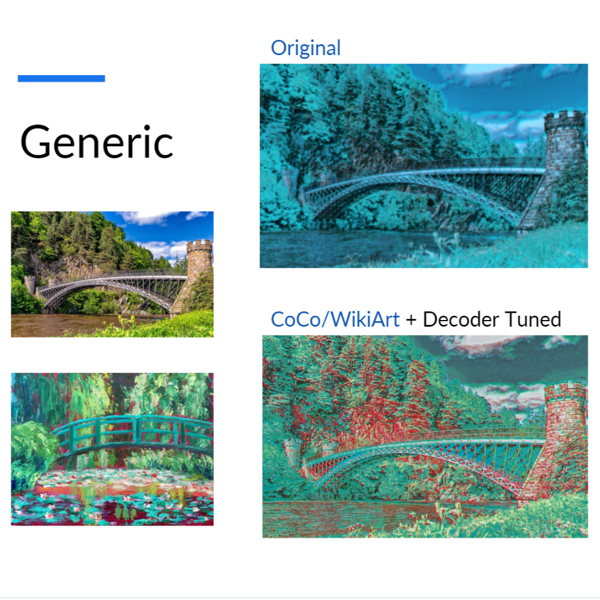

Course Project, Computer Vision
Our group's aim was to study MicroAST's architecture, analyze its weak points and build on top of it a more robust model by tweaking its architecture, loss function, and training on multiple datasets. We also developed a Web Application and Server for model deployment. Our contributions are:
We improved quality and stability of the model's outputs, especially on Faces and Artistic Styles which couldn't be found in the WikiArt dataset used by the authors of the original model.
The project was developed using Python and PyTorch for the model, Flask for the web server and Ionic for the client.
More details can be found in the Project Presentation and the Weights & Biases Report.